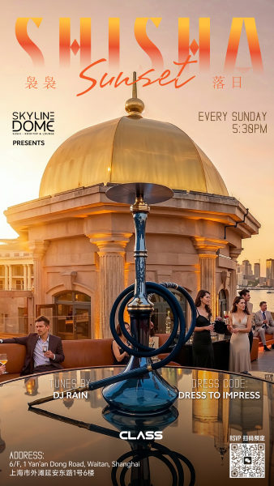

watch / Watch
Sunset Sundays
The Dome runs a Sunday sunset series with DJ Rain, curated music, cocktails, shisha, and a Bund skyline view through June 28; useful as a low-intensity date-night lead.

DateSundays to Jun 28
Time17:30
VenueThe Dome
DistrictHuangpu
Soundcurated music, rooftop lounge
PriceNot listed
Age / IDNot listed
Source layerwatchlist
Lineup and Notes
- DJ RainSmartShanghai lists music by DJ Rain for the Sunday series.
Source Trail
- SmartShanghai watchlist / checked 2026-06-11
This lead is intentionally noindexed until a direct venue, promoter, ticketing, RA, SmartShanghai detail, or official artist source confirms the details.